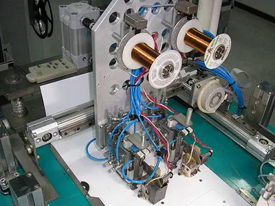
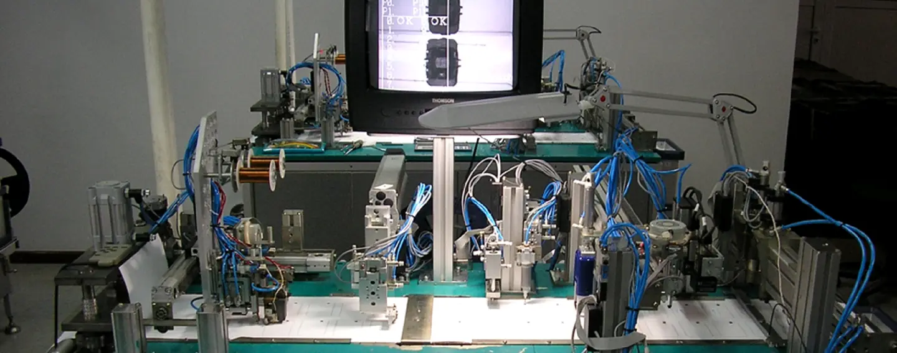
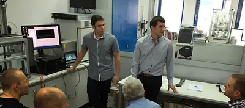
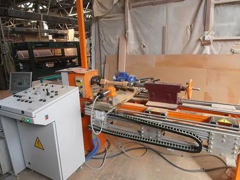
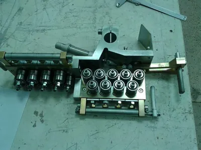
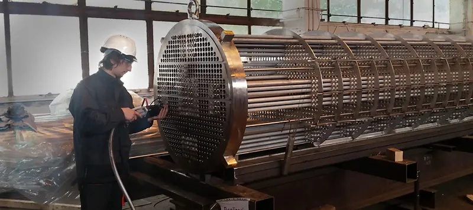
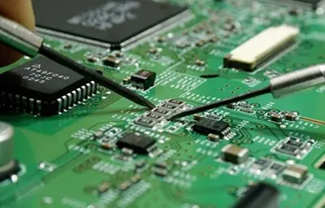

Maszyny specjalne i linie produkcyjne
- urządzenia do konkretnego procesu technologicznego
- sterowniki PLC, siłowniki pneumatyczne, serwonapędy
- pełna automatyzacja bez błędów ręcznej obsługi

Projektujemy, budujemy i uruchamiamy maszyny specjalne, linie produkcyjne i sterowanie PLC pod Państwa proces. Części metalowe wykonujemy według rysunku lub próbki.
Kraków, Aleja Pokoju 62/8 - tel. 882 731 545
Całość prowadzimy sami: mechanikę, elektrykę, program sterowania i uruchomienie. Dzięki temu każdy etap jest w jednych rękach, a maszyna powstaje dokładnie pod Państwa wymagania.
Opisują Państwo, co ma robić maszyna albo który etap produkcji wymaga automatyzacji. Wystarczy rysunek, szkic lub próbka.
Inżynierowie projektują urządzenie, przygotowują schematy i program sterowania, budują maszynę i sprawdzają ją przed odbiorem.
Uruchamiamy urządzenie u klienta, szkolimy operatorów i zapewniamy zdalny dostęp do maszyny, gdy trzeba coś sprawdzić lub zmienić.




Wybrane urządzenia z naszej pracowni - od linii do kart zbliżeniowych po frezarki CNC do drewna.
Fabryki, drukarnie, przewoźnicy, instytucje i gospodarstwa - każdy projekt zaczynał się od innego problemu technicznego.
Działamy w obszarze automatyzacji procesów produkcyjnych jako niezależne przedsiębiorstwo. Od projektu po uruchomienie kontrolujemy całe rozwiązanie.
Firmie produkcyjnej zaprojektujemy automatyczną linię, która wyeliminuje błędy ręcznej obsługi i utrzyma stałą jakość wyrobu. Komuś, kto ma własny produkt lub know-how, pomożemy przejść od specyfikacji do prototypu i do sprzętu, na którym da się go produkować.
Maszyny mają być szybkie, precyzyjne, proste w obsłudze i niezawodne - tak jak w naszym haśle: good > better > best.


Napisz, co ma robić maszyna albo jaką część trzeba wykonać. Odpowiemy z propozycją rozwiązania i kolejnymi krokami.
Aleja Pokoju 62/8
31-564 Kraków